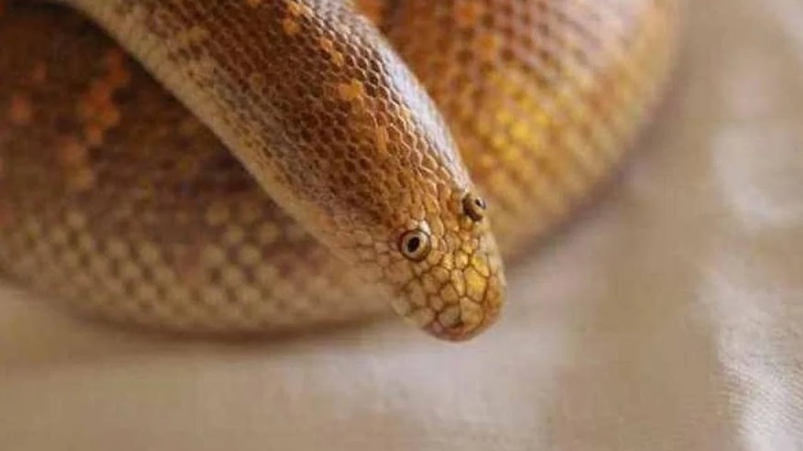

The Arabian Sand Boa (Eryx jayakari) is a small and cryptically colored snake native
to the arid regions of the Arabian Peninsula. Typically measuring 12 to 18 inches in
length, these nocturnal reptiles are expert burrowers, often found beneath desert sands.
Sporting a sandy-yellow or light brown background with irregular darker blotches, their
coloration provides effective camouflage. With wedge-shaped heads and keen senses of smell
and vibration detection, they prey on small mammals, birds, and occasionally lizards. Arabian
Sand Boas are ovoviviparous, giving birth to live young, and are generally considered of least
concern in conservation due to their undisturbed desert habitats.
